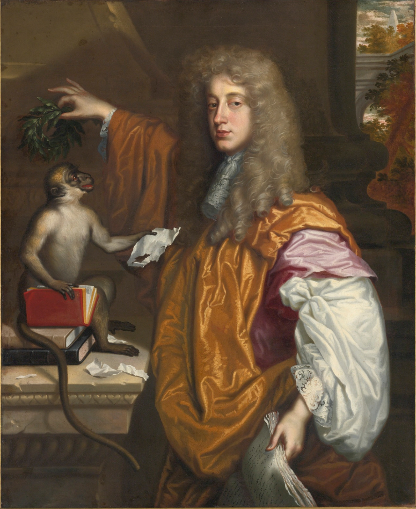

Rakes, Fops, Libertines, Coquets: Gendered Pejoratives Within Women Writers Online
By Galen Bunting
Image credit: Wikimedia Commons
{kind=link}
Background
I first encountered the character type of the rake while reading The Country Wife by William Wycherley in a British literature survey class. Ever since, I have been fascinated by character tropes such as the rake and the libertine as they appear in Restoration plays between 1660 and 1710. I also been interested in the continued influence that these tropes hold across literature, from the poetry of John Wilmot, Earl of Rochester, to the writing of Voltaire. Having just finished encoding the third volume of Eliza Haywood’s Love In Excess, I noticed that Haywood draws on many of these character tropes in her novels, especially those of the reformed rake and the libertine. For those unfamiliar with these terms, a rake has generally been defined as a witty person (typically a man) who pursues sexual depravity, while a libertine is typically a man interested in dissolute pursuits, a hedonist, and a pursuer of women and the arts, as well as wit (Linnane 2; Parry 176–178; Oxford English Dictionary Online, “Libertine,” “Rakehell”). I began to wonder if these character tropes appear in other works in Women Writers Online, and thus, my interest in this case study was born. Using the Women Writers Vector Toolkit and the Word Vector Interface, I will analyze terms associated with these character tropes as they appear within the Women Writers Online collection.
Methodology
This case study draws upon the Word Vector Interface to examine uses of the words “rake,” “libertine, “coquet,” and “fop”, along with several related terms, within the Women Writers Online corpus. In examining these terms, I trace their historical distribution within WWO by using the Women Writers Online search function. My goal is to see if these terms have high degrees of cosine similarity to each other, using the “Basic” query function in the Word Vector Interface, and to explore any overlap in their closely related terms.
Analysis
I initially expected the term “libertine” to have a high cosine similarity with “rake,” because both terms are used to define a common character trope within Restoration plays: the witty, ribald playboy whose entire existence is given up to hedonism. As detailed by Fergus Linnane in The Lives of the Rakes and Graham Parry in Stuart England, the persona of the rake evolved following the restoration of Charles II to the throne, as the king encouraged both patronage of the arts and merrymaking in his court (Linnane 2, Parry 176–178). Both the court of King Charles II and the Restoration stage popularly used the terms “rake” and “libertine” interchangeably. The so-called “Merry Gang” of courtiers who attended Charles II included John Wilmot, the Earl of Rochester, infamous for his bawdy verses and hedonistic ideology, which professed libertinism as a rebellion against social mores. Many libertine and rake characters were based upon Rochester, including Dorimant in George Etherege’s The Man of Mode, in which Dorimant outwits and consistently pokes fun of a fop by the name of Sir Fopling Flutter, and Willmore in Aphra Behn’s The Rover, in which Willmore seduces an aspiring nun. The derogatory associations of the term “rake” go back to its origins: “rakehell,” meaning one would need to rake through hell in order to find such a bad man (Oxford English Dictionary Online, “rakehell”). Meanwhile, a libertine is a man interested in dissolute pursuits, a hedonist, and a pursuer of women and the arts, as well as wit (Oxford English Dictionary Online, “Libertine”). In the WWO corpus, the term “libertine” has a cosine similarity of approximately 0.35 with the term “rake,” a number that is fairly low compared to many other terms in the collection.
Other words with higher cosine similarities to “rake” display the ways in which “rake” was deployed as a character trope and an insult. These include “cit” (with a similarity of approximately 0.7), “bawdy” (with a similarity of approximately 0.64), “citt” (a variation of “cit” with a similarity of approxmiately 0.63), and “fop” (with a similarity of approximately 0.61). “Bawdy” means to be lewd, obscene, unchaste—in short, the term refers to the exercise of obscenity or describes something that is considered obscene (Oxford English Dictionary Online, “bawdy”). The related term “cit/citt” are derogatory shortenings of citizen, similar to what we might call a “townie” today. Thus it makes sense that “cit” and “bawdy” would appear as similar terms to “rake” (Oxford English Dictionary Online, “cit”).
While I came to this project with an interest in Restoration drama, the word “rake” appears in the WWO collection throughout poetry, prose, fiction, and non-fiction. In Jane Barker’s A Patchwork Screen for the Ladies, rakes appear as an amorous threat to the female protagonist:
Nevertheless, though I was but an innocent Country Girl, yet I was not so ignorant of the World, but to know or believe, that often those Beau-Rakes, have the Cunning and Assurance to make Parents on both sides, Steps to their Childrens Disgrace, if not Ruin…
Similarly, in the first volume of Eliza Haywood’s The Female Spectator, the rake appears as a threatening figure at plays:
the most abandon’d Rake, or low-bred Fellow, who has wherewithal to purchase a Ticket, may take the Liberty of uttering the grossest Things in the chastest Ear, and safe in his Disguise go off without incurring either the Shame or Punishment his Behaviour deserves.
It might be tempting to read the term “fop” as interchangeable with “rake,” particularly as the high cosine similarity between these indicates that they are used in similar contexts. However, the term identifies someone who dresses in a showy manner, a dandy, who pretends to have wit but in fact has none (Oxford English Dictionary Online, “fop”). He may use French words to accessorize his speech, or words he does not understand. A notable example of the “fop” trope within Restoration comedy is Sir Fopling Flutter in George Etherege’s The Man of Mode, who is bested by Dorimant, the libertine/rake character; due to his ineptitude, Sir Fopling Flutter is the only character without a partner at the end of the comedy. Thus, while the word “fop” does appear in similar contexts to “rake,” it is important to note that they are definitionally distinct.
In order to understand the distinction between these two words, we can return to the Word Vector Interface to explore their differing contexts. I queried “fop” to see its own most similar terms (see Figure 2), which include: “fool” (cosine similarity: 0.69), “cit” (0.68), “coxcomb” (0.68), “dandy” (0.63), and “clown” (0.63). Coxcombs and dandies were known for their ostentatious dressing, and lacked the political positioning of the rake or the libertine: they do not show the use of “misrule or of obscenity as a democratic riposte to hierarchy and order” (O’Connell 233). To be a clown was to be ignorant or unrefined, without the wit of the rake and the libertine (Oxford English Dictionary “clown”). Robert Heilman argues that the term “fop” held a derogatory and dismissive implication similar to coxcomb and dandy: while anyone can be called a fop, the term particularly denotes someone who fails to measure up or is in some other way inferior to the one deploying the word as a descriptor (164).
Aphra Behn’s The Lover’s Watch provides an apt example of how “fop” appears in the WWO corpus. Her argument for what constitutes a good lover specifically critiques fops for ostentatious dressing:
Let Fools and Fops, whose Talents lie
In being neat, in being spruce,
Be drest, be vain, and tawdery;
With Men of Sense, ’tis out of use…
Another example occurs in Jane Barker’s Poetical Recreations, when she identifies the central worry of fops as their pursuit of fashion, saying, “I Dread this tedious Time more than / A Fop to miss a Fashion.” Thus, “fop” seems to hold a much more mocking connotation in comparison to “rake” within the WWO corpus, a connotation also indicated by the terms most similar to “fop” in the Word Vector Interface.
“Libertine” does not appear in close context when querying “rake” in the Word Vector Interface. Even when expanding the similarity search function to its full 150-term capacity, “rake” does not appear in the results. The usage of these terms within WWO confirms that this lack of association does not occur because the two terms were used at different periods in the corpus: a historical search in WWO reveals a cluster of instances of the term “rake” in the 1660s, another in the 1690s–1720s, another in the 1740s–1760s, and another in the 1780s–1830s (Figure 1.2). The term “libertine” reveals almost equivalent historical distributions: a cluster of appearances in the 1660s, another in the 1690s–1720s, another in the 1740s–1760s, and another in the 1780s–1830s (Figure 3.2).


When querying the term “libertine,” the top five results are “profligate” (cosine similarity: 0.61), “prude” (0.61), “coquet” (0.60), “ridicule” (0.59), and “perfidy” (0.59) (Figure 3.1). The model shows similar terms which denote the meaning of “libertine” through various associations: satiric associations are represented by the word “ridicule”; moral associaitons are represented through the words “profligate,” “prude,” and “perfidy”; and flirtatious associaitons are referenced in the term “coquet.” While I assumed that the terms with the highest cosine similarity would include interchangeable terms such as “rake” and “libertine,” the results instead show words that appear in similar contexts to “rake” and “libertine,” rather than direct synonyms.
In WWO, the term “libertine” seems to hold more mixed connotations than either “rake” or “fop.” Some textual examples point to the trope of the libertine as a witty gentleman, while others reflect the connotation of the libertine as closer to the rake trope. In The Lady Contemplation, a play by Margaret Cavendish, Nurse Caref argues, “may be Mariage will alter his humour; for most commonly those back-holders that are the greatest Libertines, make the best Husbands.” Similarly, in Cavendish’s The Bridals, Lady Amour remarks, “The more Fools they; but my Husband and I, live the life of Libertines; for he takes his pleasure, and I take mine.” Both quotes reference the philosophy of libertinism: to live for pleasure. By contrast, Emily Clark Frederick’s The Esquimaux, or Fidelity presents a libertine as a ruinous man: “Yet he continued the same pursuits without remorse; for what is so cold, so unfeeling as a libertine’s heart, who views without feeling, and even with indifference, the ruin he has made?” In these works, the libertine appears as a figure who seeks pleasure without regard for the ruin he may cause. His life might prioritize pleasure and hedonism, along with fashion that any fop might envy, but in a similar fashion to the rake, he may show little care for the women he also pursues.
I was surprised to find the term “coquet” has a higher cosine similarity to “libertine” (.60) than “rake” does (.35). “Coquet” also brings a gendered dynamic into play, as the term usually refers to women who flirt with men. The term “coquet” is a diminutive, stemming from the French word “little cockerel,” and while it originally referred to flirtatious men as well as women, the meaning changed to refer only to women (Oxford English Dictionary Online, “coquet”). Refer to Figure 4 in order to see the query results for “coquet.” Again, these results show how this query reveals words used in similar contexts, rather than straightforward synonyms. Across the WWO corpus, examination of these terms can aid in understanding their uses as descriptors of character traits, insults, and signs of cultural shift.
Conclusion
Since the WWO corpus contains female-authored texts from 1526 to 1850, a closer examination of how women writers used terms such as “rake,” “fop,” “libertine,” and “coquet” can display connotations and usages specific to this corpus. While “libertine” and “rake” are often used interchangeably in historical texts, the results considered in this case study suggest that the authors in WWO may have used these terms in different contexts. When analyzed using word2vec, the corpus reflects textual connections which may be less visible when reading these works individually. The basic query in the Word Vector Interface can be of great use in locating similar words throughout the corpus, while the chronological search in WWO can reveal key terms in context, the number of texts referencing the words, and their historical distribution. The golden age of the libertines might be over, vanished with the court of Charles II, but their influence lives on in the corpus of Women Writers Online.